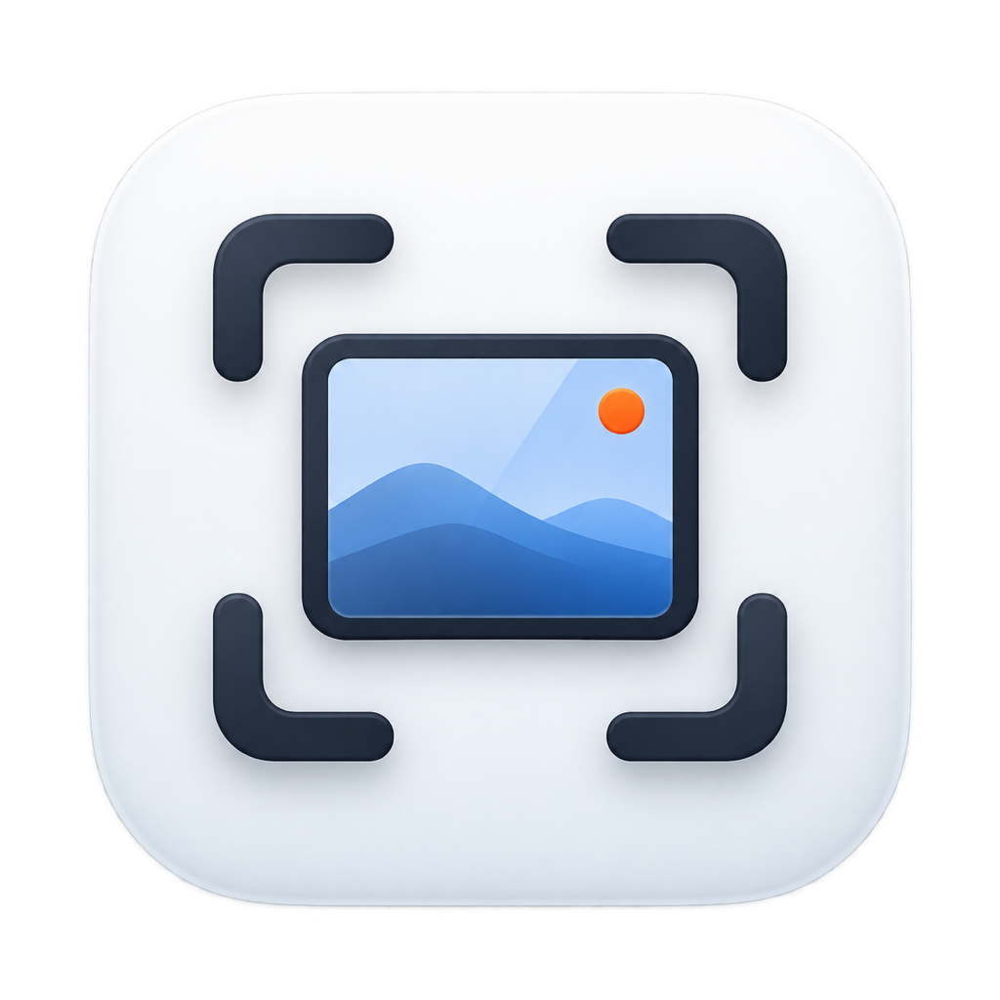
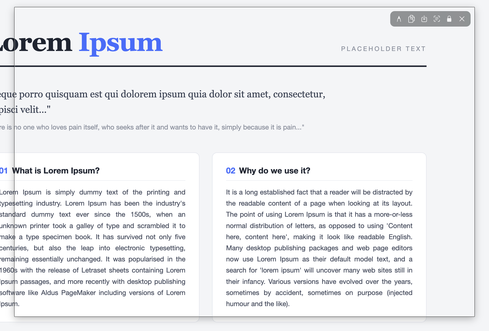
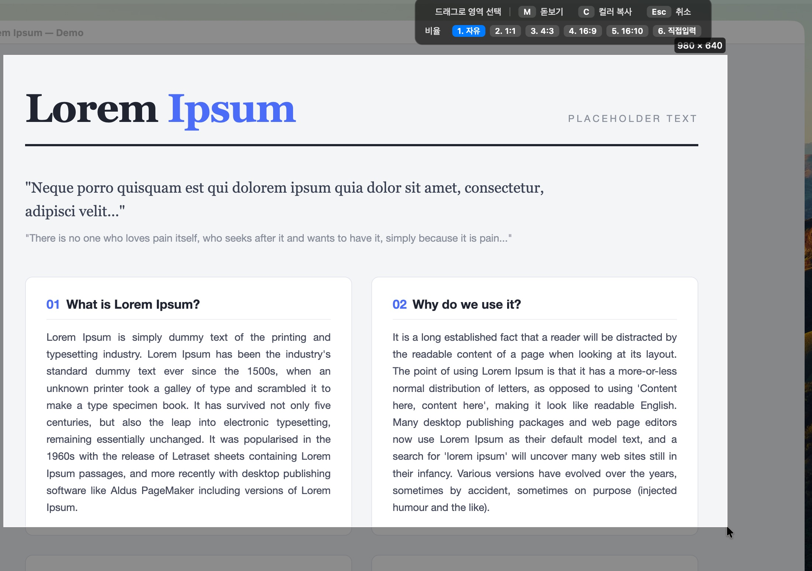
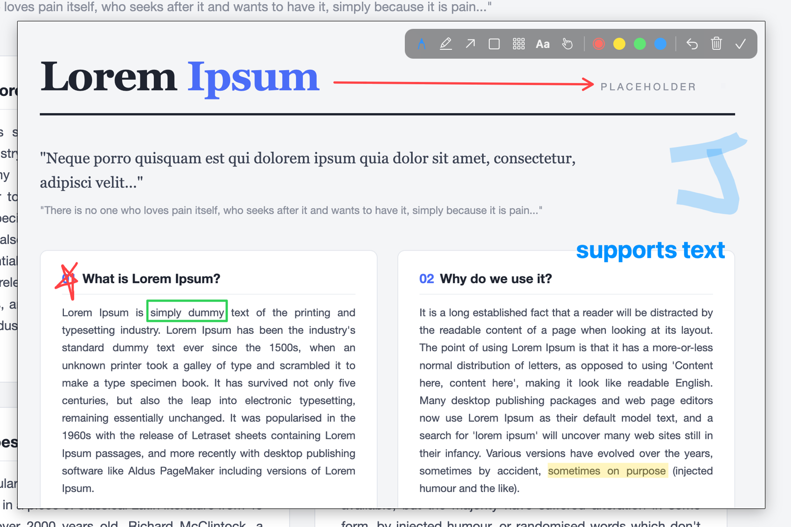
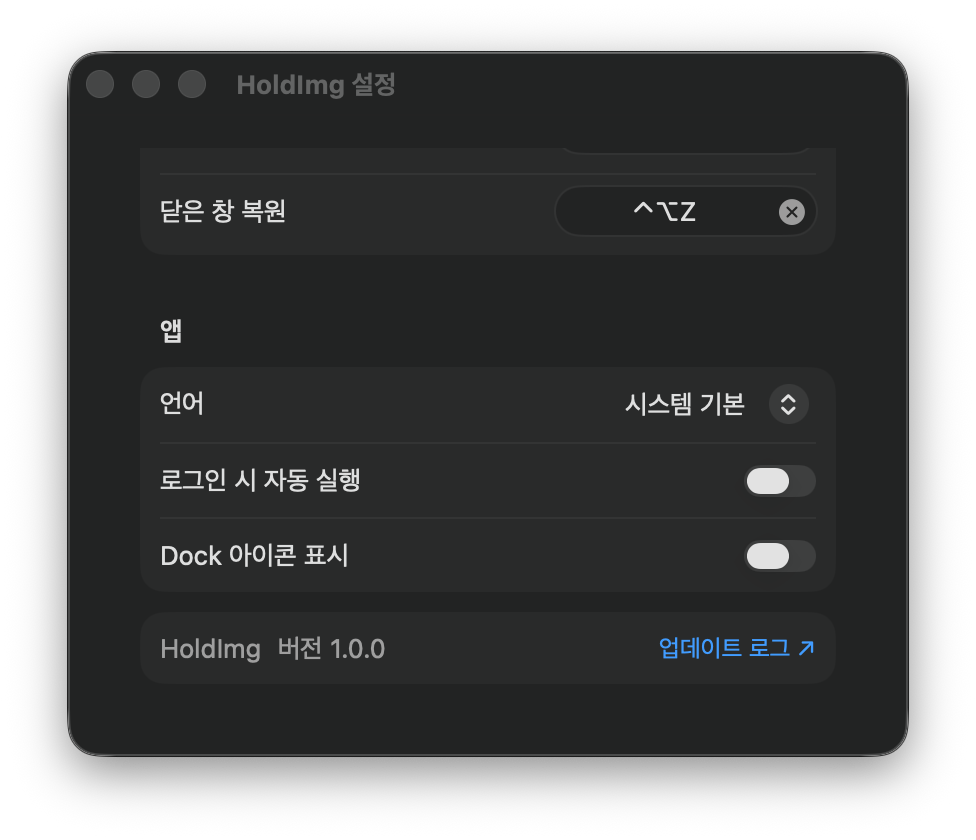

화면 위에 떠 있는 스크린샷 — 캡처하고, 붙이고, 언제든 다시 복사하세요
한국어 · English
첫 실행부터 첫 캡처까지 3단계입니다.
GitHub Releases에서
HoldImg.app.zip을 받아 압축을 풀고 /Applications에 넣으세요.
xattr -d com.apple.quarantine /Applications/HoldImg.app을 실행하세요.macOS 보안 정책상 화면 캡처에는 사용자 허용이 필요합니다. 처음 Ctrl⌥C를 누르면 권한 안내가 표시됩니다.
/Applications/HoldImg.app을 직접 추가HoldImg는 캡처한 이미지를 화면 위에 떠 있는 독립 창으로 보여줍니다. 이 창은 스크린샷의 사본이 아니라 그 자체로 "움직이는 메모지"처럼 동작합니다.

어떤 앱을 쓰고 있든 동작합니다. 모든 단축키는 설정에서 재지정할 수 있습니다.
| 단축키 | 기능 | 설명 |
|---|---|---|
| Ctrl⌥C | 영역 캡처 | 화면이 프리즈되고 드래그로 영역을 선택합니다 |
| Ctrl⌥W | 윈도우 캡처 | 마우스를 올린 창이 하이라이트되고, 클릭하면 그 창만 캡처됩니다 |
| Ctrl⌥R | 마지막 영역 재캡처 | 직전에 선택한 영역을 오버레이 없이 바로 다시 찍습니다 |
| Ctrl⌥V | 클립보드 붙여넣기 | 클립보드에 들어있는 이미지를 플로팅 창으로 띄웁니다 |
| Ctrl⌥H | 모든 창 숨기기/보이기 | 띄워둔 창 전체를 잠시 치우고, 다시 누르면 원래 위치 그대로 복귀합니다 |
| Ctrl⌥Z | 닫은 창 복원 | 마지막으로 닫은 창을 원래 위치·크기로 다시 띄웁니다 — 최근 10개까지 순서대로 복원 |
Ctrl⌥C를 누르면 모든 디스플레이가 그 순간의 화면으로 프리즈되고 선택 모드로 진입합니다. 여러 모니터에 걸쳐 드래그해도 하나로 합쳐지며, Retina 디스플레이에서는 네이티브 픽셀 해상도(2x)로 저장돼 확대해도 선명합니다.

화면 상단의 힌트 바가 사용 가능한 동작을 칩으로 보여줍니다:
M 돋보기 · C 컬러 복사 · Esc 취소,
그 아래 비율 선택 칩 1. 자유 ~ 6. 직접입력.
선택 중 숫자키로 캡처 비율을 바꿀 수 있습니다. 상단 힌트 바의 칩
(1. 자유 · 2. 1:1 …)에서 현재 모드가 파란색으로
표시됩니다. 드래그 도중에 눌러도 선택 중인 영역이 시작점을 유지한 채
새 비율로 즉시 바뀌므로, 여러 비율을 눌러보며 비교할 수 있습니다.
| 키 | 비율 | 동작 |
|---|---|---|
| 1 | 자유 | 기본값 — 원하는 비율로 드래그 |
| 2 | 1:1 | 드래그 방향에 따라 해당 비율로 자동 조정 |
| 3 | 4:3 | |
| 4 | 16:9 | |
| 5 | 16:10 |
6을 누르면 크기 입력 필드가 나타납니다. 1920x1080처럼
원하는 픽셀 크기를 입력하고 Return을 누르면, 그 크기의 박스가
커서를 따라다닙니다. 원하는 위치에서 클릭하면 즉시 캡처됩니다.
640x360, 640 360, 640×360 모두 인식640x360은 1280×720 PNG로 저장됩니다M을 누르면 커서 주변을 확대해 보여주는 돋보기와 커서 픽셀의
HEX 값이 표시됩니다 (기본은 꺼져 있고, 한 번 더 누르면 꺼집니다).
C를 누르면 커서 픽셀의 HEX 값(예: #3B6FE0)이
클립보드에 복사됩니다.
Ctrl⌥W로 진입하면 화면이 프리즈되고, 마우스를 올린 창이 자동으로 감지·하이라이트됩니다. 클릭하면 그 창만 네이티브 해상도로 캡처됩니다.
Esc를 누르면 언제든 선택을 취소하고 돌아갑니다.
캡처된 이미지는 테두리 없는 얇은 창으로 표시됩니다. 창에 마우스를 올리고 아래처럼 조작하세요.
| 동작 | 방법 |
|---|---|
| 이동 | 아무 곳이나 드래그 — 화면 모서리와 다른 창의 모서리·중앙에 자동 스냅. 방향키 = 1pt, ⇧+방향키 = 10pt 미세 이동 |
| 회전/반전 | R 90° 시계 · ⇧R 반시계 · F 좌우 반전 — 이미지 데이터에 실제 적용돼 복사/저장에도 반영됩니다 |
| 파일로 드래그 | 우클릭 드래그 — Finder·슬랙·메일 등 아무 앱에나 이미지로 드롭 |
| 크기 조절 | 스크롤 = 커서 기준 줌 · 모서리/가장자리 드래그 = 리사이즈 (기본 비율 유지 — L 또는 툴바의 🔒 버튼을 풀면 자유 비율).
조절하는 동안 창 하단에 현재 치수(예 800 × 600)가 잠깐 표시됩니다 — 이미지에는 찍히지 않습니다 |
| 축소/복원 | 더블클릭 — 썸네일 크기로 접었다가 다시 눌러 복원 |
| 이미지 복사 | 클릭 또는 ⌘C — 다른 앱에서 바로 붙여넣기 가능 |
| 파일로 저장 | ⌘S — PNG 또는 JPEG 선택 |
| 펜으로 표시 | P — 주석 도구 모드 (펜·형광펜·화살표·사각형·모자이크·텍스트·이동) |
| 텍스트 추출 (OCR) | 툴바 OCR 버튼 또는 우클릭 메뉴 — 인식된 텍스트가 클립보드로 복사됩니다 |
| 항상 위에 표시 | T — 모든 창 위에 고정 토글 |
| 클릭-스루 | G — 창이 보이되 마우스는 아래 앱으로 통과 |
| 투명도 | ⌥+스크롤 — 창을 반투명하게 |
| 닫기 | ⌘W 또는 Esc |
창 위에 마우스를 올리면 우측 상단에 작은 툴바가 나타납니다: 펜 · 복사 · 저장 · OCR · 비율 잠금 · 닫기. 자주 쓰는 동작을 단축키 없이 바로 실행할 수 있습니다. 비율 잠금(🔒)은 기본 켜져 있으며, 해제하면 모서리 드래그가 자유 비율로 동작합니다. OCR 버튼은 이미지 속 텍스트를 인식해 클립보드로 복사합니다 (텍스트가 없으면 비프음).
툴바의 펜 버튼 또는 P를 누르면 주석 모드가 켜집니다. 툴바 맨 앞의 도구 버튼으로 도구를 고르고 이미지 위를 드래그합니다.

창 위에서 우클릭하면 위 기능 전체(복사 · 저장 · 텍스트 추출(OCR) · 펜 · 항상 위 · 클릭-스루 · 투명도 프리셋 · 회전/반전 · 축소 · 닫기)에 접근할 수 있습니다. 우클릭한 채로 드래그하면 창이 파일처럼 따라다니며, 원하는 앱이나 데스크톱에 놓으면 이미지로 붙습니다.
메뉴바 → 설정… (⌘,)

시스템 기본값 · 한국어 · English 중 선택. UI 전체가 즉시 전환됩니다.
캡처하는 즉시 클립보드에 이미지를 넣어둡니다. 붙여넣기가 잦다면 켜두세요.
새로 뜨는 플로팅 창이 기본으로 항상 위 상태가 됩니다.
⌘S 저장 시 기본으로 열리는 폴더를 지정합니다.
히스토리에 남길 캡처 개수를 1~50개 사이에서 조절합니다.
켜면 보관 개수를 넘어 삭제되는 캡처가 휴지통으로 갑니다. 기본은 꺼짐(영구 삭제).
6개 전역 단축키를 원하는 조합으로 바꿀 수 있습니다.
Mac 시작 시 메뉴바에 자동으로 상주합니다.
메뉴바 전용으로 쓰거나 Dock에도 띄울 수 있습니다.
Q. 캡처가 안 되고 권한 안내만 떠요
화면 및 시스템 오디오 녹음 권한이 꺼져 있습니다. 시작하기 섹션의 절차대로 HoldImg를 허용하세요.
Q. 플로팅 창이 클릭돼요 (통과시키고 싶어요)
창에서 G를 누르거나 우클릭 → 클릭-스루 모드를 켜세요.
Q. 클릭-스루 상태의 창을 못 움직여요
의도된 동작입니다. 메뉴바 → "모든 창 클릭-스루 해제" 후 조작하세요.
Q. 이전에 캡처한 걸 다시 띄우고 싶어요
메뉴바 → 최근 캡처에서 클릭하면 됩니다. 파일로도 남아 있습니다.
Q. 캡처 이미지는 어디에 저장되나요?
~/Library/Application Support/HoldImg/History에 PNG로 자동 저장됩니다.
⌘S로 원하는 위치에 별도 저장도 가능합니다.